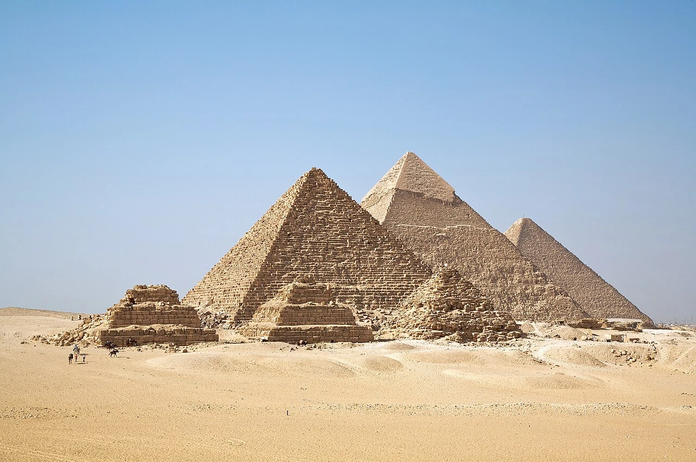
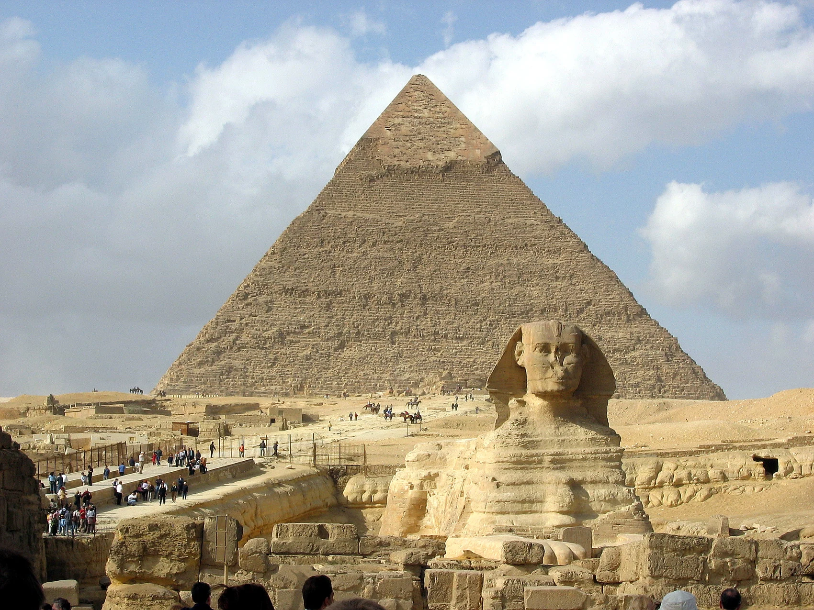

Sua origem
A evidência arqueológica associa o monumento ao reinado de Quéfren, na IV Dinastia. A atribuição resulta do contexto do complexo.

✧ UMA EXPOSIÇÃO ALÉM DO TEMPO
4.500 anos de história.
Uma experiência além do tempo.
Egito, África
IV DINASTIA · ANTIGO IMPÉRIONa margem ocidental do Nilo, uma civilização transformou pedra, conhecimento e trabalho em uma paisagem que atravessa milênios.
Esta é uma jornada pelos monumentos — e pelas pessoas — que construíram para a eternidade.
Uma paisagem planejada para a vida após a morte. Explore os monumentos, os caminhos e os vestígios de quem tornou tudo isso possível.
SELECIONE UM DOS OITO PONTOSPreparando o mapa arqueológico…
Corpo de leão. Cabeça humana.
Um encontro entre a força da
natureza e o poder real.

Entre a pedra
e o silêncio.
A evidência arqueológica associa o monumento ao reinado de Quéfren, na IV Dinastia. A atribuição resulta do contexto do complexo.
O corpo foi talhado no calcário do planalto. Camadas de rocha com resistências diferentes respondem de formas distintas à erosão.
O corpo de leão e a cabeça humana exprimem a força e a autoridade do rei. O olhar se dirige ao horizonte oriental.
Areia, erosão e restaurações fazem parte de sua história. A conservação procura preservar um monumento continuamente exposto.
Toque nos pontos da fotografia ou use Tab e Enter para explorar os detalhes. As posições são indicativas; a Estela do Sonho fica entre as patas dianteiras.
ESQUEMA GEOMÉTRICO · NORTE PARA CIMA · SEM ESCALA TOPOGRÁFICA
A orientação das faces para os pontos cardeais é evidência mensurável. A intenção de reproduzir o Cinturão de Órion é uma hipótese contestada, sem comprovação arqueológica.
Representação artística do céu, sem época astronômica específica e sem afirmar coincidência geométrica.
Quando a engenharia
encontrou o infinito.
Bases quadradas. Faces orientadas aos pontos cardeais. Milhares de trabalhadores e uma logística que conectava pedreiras, assentamentos e rotas de água.
ALTURA ORIGINAL APROXIMADA
DA GRANDE PIRÂMIDE
LADO APROXIMADO
DA BASE DE QUÉOPS
O núcleo utiliza sobretudo calcário local. Calcário fino de Tura foi empregado no revestimento; granito de Assuã aparece em espaços internos. Os métodos exatos de elevação dos blocos continuam em debate.
Vestígios de Heit el-Ghurab revelam alimentação, alojamento e administração. Os papiros de Merer documentam o transporte de calcário de Tura por água durante o reinado de Quéops.
A orientação da Grande Pirâmide se aproxima muito dos pontos cardeais. Métodos solares e estelares foram propostos para explicar a medição; a técnica específica não está estabelecida.
Reis, construtores, pesquisadores.
A história de Gizé é também
a história de cada geração que procurou compreendê-la.
O reinado de Quéops dá origem à Grande Pirâmide. O monumento faz parte de um complexo funerário com templos, calçada, pirâmides menores e sepulturas.
A segunda grande pirâmide ocupa terreno mais elevado. Seu complexo inclui o templo do vale; o contexto arqueológico associa a Esfinge ao mesmo reinado.
Menor em dimensões, a pirâmide de Miquerinos completa os três grandes complexos. Parte de seu revestimento utiliza granito, distinguindo-a das vizinhas.
Mais de mil anos depois, Tutmés IV celebra a remoção da areia que cobria a Esfinge. A Estela do Sonho, colocada entre suas patas, registra o vínculo do rei com um monumento já antigo.
Gizé integra o sítio “Mênfis e sua Necrópole”, inscrito pela UNESCO em 1979. Levantamentos, conservação e novas pesquisas continuam a ampliar o conhecimento sobre o planalto.
CONHECER O SÍTIO NA UNESCODocumentação digital, escavações e conservação conectam registros históricos a novas pesquisas. O Digital Giza reúne acervos e modelos para tornar o conhecimento sobre o planalto acessível.
EXPLORAR O ACERVO DIGITALA construção dos três grandes complexos pertence à IV Dinastia, aproximadamente entre os séculos XXVI e XXV a.C. Os anos são marcos aproximados segundo o Digital Giza; as cronologias de reinados variam entre as fontes.